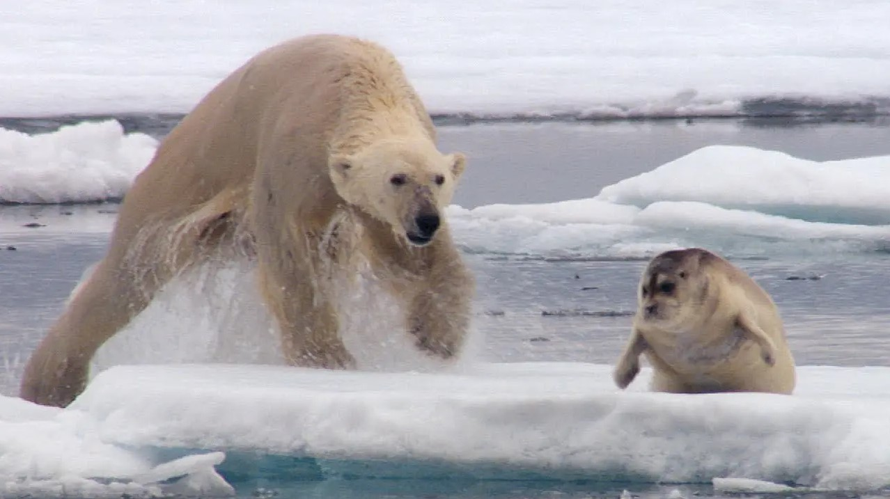

El mundo del oso polar
Descubre la fantástica vida del rey del Ártico
La dieta del oso polar: cazadores expertos y sobrevivientes del cambio climático
Los osos polares son animales carnívoros y se alimentan principalmente de focas, aunque también pueden comer morsas, ballenas y otros animales marinos. El oso polar es un cazador paciente que espera a que las focas salgan a la superficie del agua para respirar. Una vez que detecta una presa potencial, se acerca sigilosamente y espera a que la foca se asome para respirar para saltar y capturarla con sus poderosas garras.
Los osos polares son animales solitarios y pasan la mayor parte del tiempo cazando y buscando alimento. Sin embargo, también son conocidos por su capacidad para conservar energía, y pueden pasar largos períodos de tiempo sin comer. Durante los meses de invierno, cuando el hielo del mar es más grueso, los osos polares pueden cazar menos y subsisten con sus reservas de grasa corporal.
Los hábitos reproductivos de los osos polares también son interesantes. Las hembras adultas dan a luz a una o dos crías cada dos o tres años, y los cachorros dependen completamente de su madre durante los primeros meses de vida. Los osos polares también son conocidos por su capacidad para caminar largas distancias en busca de alimento o para encontrar una pareja reproductora. En general, los osos polares tienen un estilo de vida nómada y se mueven a lo largo del hielo del mar a medida que cambian las estaciones y las condiciones de caza.
